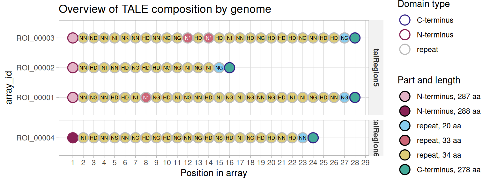

A TALE (Transcription Activator-Like Effector) is a modular protein: a central array of near-identical ~34-residue repeats, each one specifying a single DNA base through two variable residues (its RVD), flanked by an N- and a C-terminal region. tantale’s job is to find these arrays in genomic sequence, and to represent them as data you can subset, compare and plot like any other tibble, with one row per repeat or terminus.
This article is a two-minute tour. It loads a small result already sitting on disk, so there are no external tools to install first. The package website has the full set of articles, which start from raw genomic FASTA and carry a handful of real Xanthomonas oryzae genomes through discovery, classification, alignment and target prediction.
A tales object
tell_tales() searches a genome for TALE-coding regions and writes its findings to a directory of reports and FASTA files; tales_from_telltales() reads that directory back into R. The package ships one such directory already computed (four arrays found across two short input sequences), so this tour can start from the object and skip a multi-minute search:
Code
example_dir <- system.file("extdata", "tellTaleExampleOutput", package = "tantale")
x <- tales_from_telltales(example_dir)
x
#> <tales> 4 arrays, 96 parts
#> layers: rvd | 6 other columns
#> rvd
#> ROI_00001 NTERM NN NG NN HD HD NI N* NG HD NI NG NN HD NI NG NI NG NN N ...
#> ROI_00002 NTERM NN HD NI NN HD NG HD HD NG NG NI NG NI NG CTERM
#> ROI_00003 NTERM NN ND NN NI NK NN HD NN NG NG N* HD N* HD NI NN HD NG H ...
#> ROI_00004 NTERM NI HD NN NS NN NG HD NG HD NG NN NG HD NS HD NI NG HD H ...Every row is one part of one TALE array (the domains composing the full protein, ie the array): a repeat or a terminus. summary() gives the array-level view:
Code
summary(x)
#> <tales> summary
#> arrays / parts 4 / 96
#> distinct RVDs 8
#> repeats per array min 14 median 24 max 26
#> arrays with both termini 4 of 4
#> source sequences 2
#> anomalies noneChecking for trouble
Real assemblies are not always clean: a frameshift can leave AnnoTALE unable to parse a repeat structure out of a candidate array, or a terminus can be truncated. tales_anomalies() reports which arrays, if any, need a second look:
Code
tales_anomalies(x)
#> # A tibble: 0 × 3
#> # ℹ 3 variables: array_id <chr>, check <chr>, detail <chr>Zero rows means none did, here. The mining article covers what to do when this table is not empty – tantale has two different ways to correct a frameshifted array.
Looking at the arrays
plot() on a tales object lays out every array’s parts in order. The outline of each circle gives the domain type, its fill the part’s length in amino acids, and each repeat carries its RVD. The last repeat of each array is shorter (20 residues here): it is the half-repeat that ends every TALE repeat region:
Code
plot(x)
Where to next
This is deliberately the smallest possible slice of tantale. From here, the package website walks through the full pipeline on real genomes:
- Mining TALE sequences in genomes – discovery from raw FASTA, and correcting the frameshifts real assemblies produce
-
The
talesclass – what the object built above actually is, in depth - Genuine truncTALEs and frameshift correction – how the two frameshift-correction methods treat naturally truncated TALEs
- Classifying TALE sequences from genomes – grouping arrays across several genomes by relatedness
-
Multiple alignment of TALE arrays and the
tales_msaclass - Predicting TALE targets – from an aligned group to a predicted DNA binding site
These four articles form one analysis
Classification, both alignment articles, and target prediction all work over the same three genomes and share one discovery/comparison/grouping result. The classification article computes it and caches it in
vignettes/articles/_cache/, outside the installed package; the other three read that cache. To render one of those three on its own from a clean checkout, render the classification article first.